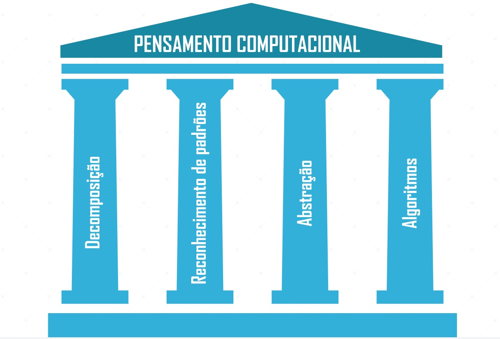

Identificar o conceito de solução estruturada, raciocínio lógico e pensamento computacional.
Modulo 2
Distinguir o uso de algumas ferramentas para a representação de soluções.
Modulo 3
Reconhecer as aplicações do pseudocódigo e da ferramenta Portugol Studio.
Conclusão
MODULO 1
Para que um robô realize determinadas tarefas, devemos explicar com o máximo de detalhes o que será executado.
Pois o robô executa muito bem aquilo para o qual foi programado, mas não tem capacidade de compreender instruções vagas.
Para que a tarefa seja corretamente desempenhada pelo robô, seriam necessários muitos mais níveis de detalhamento e definição, como uma sequência de passos.
O computador não tem discernimento para julgar culturalmente se algo é certo ou errado. No entanto, ele pode ser instruído para tomar decisões lógicas, baseadas em critérios objetivos, e seguir instruções ordenadas. A isso, chamamos solução estruturada.
Assista os vídeos a seguir:
Comentário
Embora possa parecer mais complexo dar instruções de forma estruturada a um computador, é só uma questão de prática para que você desenvolva esta habilidade. Além disso, existem diversas vantagens em instruir computadores a executar tarefas: eles não se cansam, não precisam parar para beber água, executam cálculos matemáticos muito mais rápido que seres humanos etc.
Pensamento Computacional
Aplicar o pensamento computacional é o primeiro passo para conseguir instruir o computador a executar determinada tarefa. O pensamento computacional vai permitir que você proponha a solução de determinado problema de forma que o computador possa executá-la.
De acordo com Brackmann (2017), o Pensamento Computacional tem quatro pilares para a resolução de problemas. São eles:
Decomposição
Rec. de padrões
Abstração
Algoritimos

MODULO 2
Até aqui já percebemos que Algoritimos e Lógica de Programação são pilares imporantes para a resolução de problemas computacionais.
Uma forma inteligente de representar o nossos Algoritimos são através de FLUXOGRAMAS:
MODULO 3
Pseudocódigo
Pseudocódigo é uma linguagem artificial e informal que ajuda programadores a desenvolver algoritmos. O pseudocódigo parece com a forma natural que usamos para nos expressar, mas também tem semelhanças com uma linguagem de programação para um computador real. Assim, ele é útil para ajudar o programador a pensar na solução, mas não pode ser executado por uma máquina.
Neste momento você precisou exercitar o Portugol.
Considerações finais, ouça o podcast e revise o assunto: